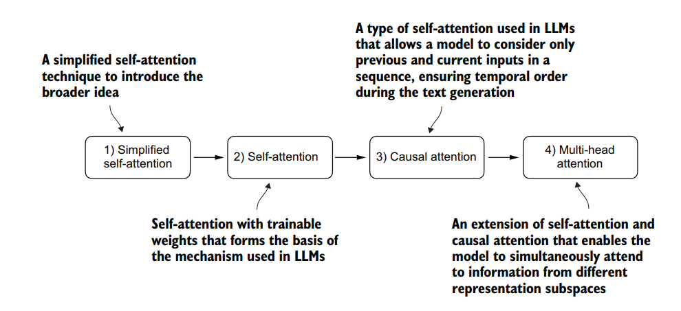
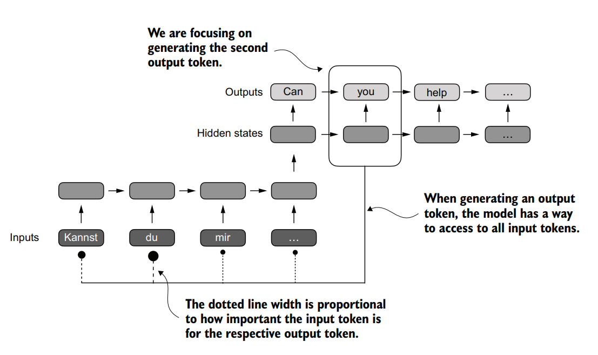
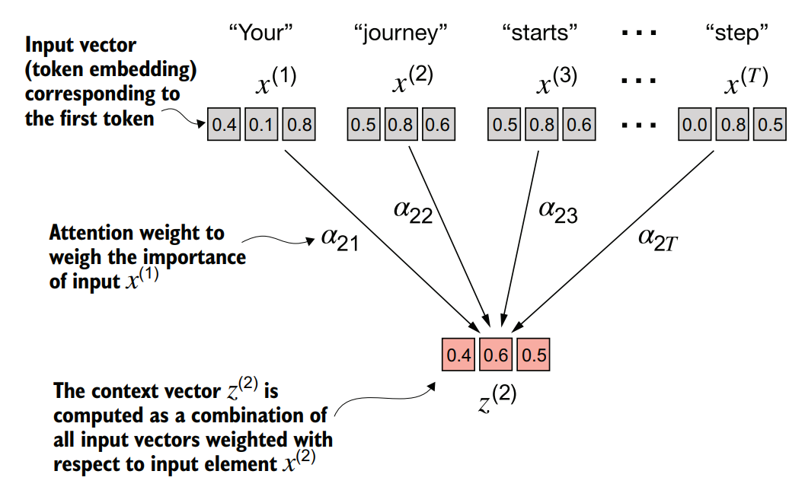
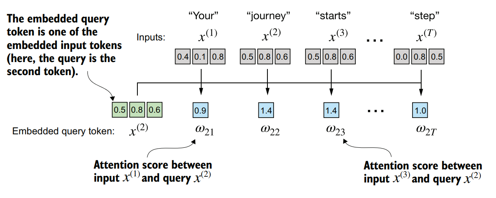
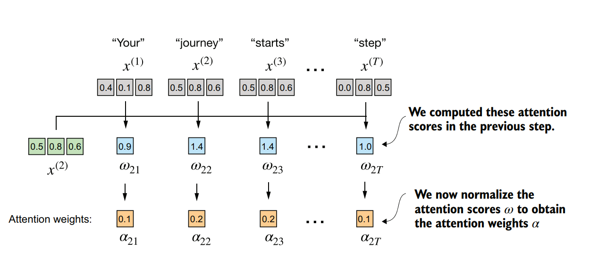
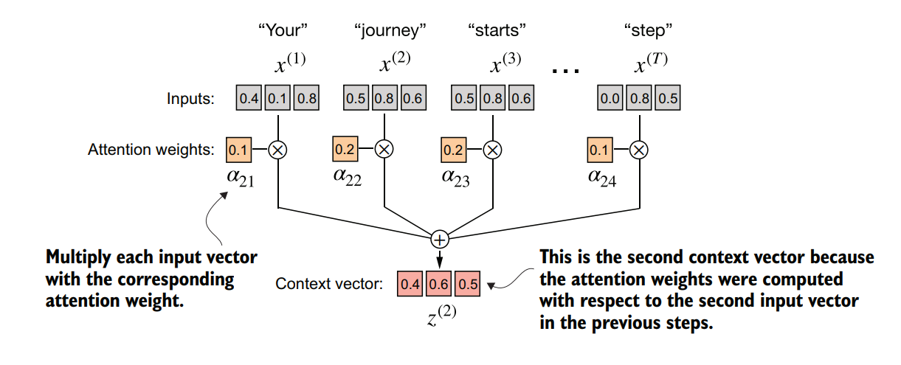

Preparing input text for large language models (LLMs) requires tokenizing raw text into subword units and converting those discrete units into continuous embedding vectors. Once text tokens are mapped into continuous vector spaces, they must be processed by the core neural architecture of the transformer: the attention mechanism. In this article, we begin implementing attention mechanisms from scratch in PyTorch. We will build a simplified variant of self-attention without trainable parameters, establishing the mathematical foundations required for trainable single-head and multi-head attention blocks.
Key Takeaways
- Self-attention mechanisms calculate dynamic context vectors $z^{(i)}$ by evaluating pairwise relationships across all positions within an input sequence.
- Traditional encoder-decoder RNNs suffer from information bottlenecks because decoding depends solely on a fixed final hidden state vector.
- Softmax normalization converts raw scalar dot-product attention scores into positive probability distributions that sum to 1.0.
- PyTorch matrix operations vectorize self-attention across sequence elements
(
attn_scores = inputs @ inputs.T), eliminating explicit loops.
Capturing Data Dependencies with Attention Mechanisms
Attention mechanisms resolve the fundamental context bottleneck of legacy sequence-to-sequence models by allowing neural networks to dynamically focus on specific input tokens. Before the introduction of the Transformer architecture, recurrent neural networks (RNNs) served as the standard encoder-decoder architecture for natural language translation tasks.

Limitations of Recurrent Neural Networks
In a traditional encoder-decoder RNN, the encoder network receives the input sequence one token at a time. At each time step, the encoder updates its internal hidden state vector to encapsulate the sequence context up to that point. The final hidden state vector of the encoder is then passed to the decoder network to initiate sequence generation.
The major structural limitation of this approach is that the decoder cannot directly access earlier intermediate hidden states generated by the encoder. The entire semantic representation of a long input sequence must be compressed into a single fixed-length hidden vector. For long sentences or complex technical passages, this fixed-size bottleneck leads to severe context loss and performance degradation.
Selective Context Access with Bahdanau Attention
To address the information bottleneck of standard RNNs, Bahdanau et al. (2014) introduced an attention mechanism for sequence translation. This innovation modified the encoder-decoder framework by enabling the decoder to access all intermediate encoder hidden states selectively at each decoding step.

Using an attention mechanism, the text-generating decoder part of the network can access all input tokens selectively. This means that some input tokens are more important than others for generating a given output token. The importance is determined by the attention weights, which we will compute later.
By assigning scalar attention weights to each encoder state, the network dynamically determines which input tokens are most relevant for generating each target output token.
Defining Self-Attention
While Bahdanau attention connects separate encoder and decoder networks, self-attention operates within a single sequence. Self-attention enables each token position in an input sequence to attend to every other position in the same sequence. This allows the model to compute context-aware representations by directly relating words within the same context.
Attending to Different Parts of the Input with Self-Attention
Self-attention computes dynamic weight distributions across input tokens without relying on recurrence. In this section, we implement a simplified form of self-attention that contains no trainable weight matrices. This simplified mechanism establishes the core linear algebra operations used across all modern Transformer variants.

The goal of self-attention is to compute a context vector for each input element that combines information from all other input elements. In this example, we compute the context vector $z^{(2)}$. The importance or contribution of each input element for computing $z^{(2)}$ is determined by the attention weights $\alpha_{21}$ to $\alpha_{2T}$. When computing $z^{(2)}$, the attention weights are calculated with respect to input element $x^{(2)}$ and all other inputs.
The primary objective of self-attention is to compute an enriched context vector $z^{(i)}$ for each input embedding vector $x^{(i)}$. The resulting context vector $z^{(i)}$ combines information from all tokens $x^{(1)}$ through $x^{(T)}$ according to their relative importance.
Step 1: Defining Input Token Embeddings
Consider an input sequence consisting of six words: "Your journey starts with one step".
Suppose these tokens have already been mapped to three-dimensional embedding vectors. We represent this
input sequence as a PyTorch tensor of shape [6, 3]:
import torch
inputs = torch.tensor(
[[0.43, 0.15, 0.89], # Your (x^1)
[0.55, 0.87, 0.66], # journey (x^2)
[0.57, 0.85, 0.64], # starts (x^3)
[0.22, 0.58, 0.33], # with (x^4)
[0.77, 0.25, 0.10], # one (x^5)
[0.05, 0.80, 0.55]] # step (x^6)
)In this matrix, each row corresponds to an input token vector $x^{(i)} \in \mathbb{R}^3$, where $i \in \{1, \dots, 6\}$.
Step 2: Computing Intermediate Attention Scores
The first operational step in self-attention is calculating intermediate scalar similarity values $\omega$, called attention scores. We measure similarity by computing the vector dot product between a target query token vector and every token vector in the sequence.

The overall goal is to illustrate the computation of the context vector $z^{(2)}$ using the second input element, $x^{(2)}$ as a query. This figure shows the first intermediate step, computing the attention scores $\omega$ between the query $x^{(2)}$ and all other input elements as a dot product. (Note that the numbers are truncated to one digit after the decimal point to reduce visual clutter.)
To calculate the attention scores for the second token $x^{(2)}$ ("journey"), we treat
$x^{(2)}$ as the query vector and compute its dot product with all sequence vectors $x^{(1)}$ through
$x^{(6)}$:
query = inputs[1]
attn_scores_2 = torch.empty(inputs.shape[0])
for i, x_i in enumerate(inputs):
attn_scores_2[i] = torch.dot(x_i, query)
print(attn_scores_2)# Output
tensor([0.9544, 1.4950, 1.4754, 0.8434, 0.7070, 1.0865])The resulting 1D tensor contains six unnormalized scalar scores representing the dot-product similarity between query $x^{(2)}$ and each input token.
Step 3: Normalizing Attention Scores with Softmax
Raw dot-product attention scores are unnormalized scalars. To convert these scores into a valid probability distribution, we normalize them using the softmax function. Normalization ensures that all attention weights are non-negative and sum to exactly 1.0, maintaining numerical stability during model training.

After computing the attention scores $\omega_{21}$ to $\omega_{2T}$ with respect to the input query $x^{(2)}$, the next step is to obtain the attention weights $\alpha_{21}$ to $\alpha_{2T}$ by normalizing the attention scores.
We compute the normalized attention weights $\alpha^{(2)}$ for query $x^{(2)}$ using
torch.softmax:
attn_weights_2 = torch.softmax(attn_scores_2, dim=0)
print("Attention weights:", attn_weights_2)
print("Sum:", attn_weights_2.sum())# Output
Attention weights: tensor([0.1385, 0.2379, 0.2333, 0.1240, 0.1082, 0.1581])
Sum: tensor(1.)
The normalized attention weight vector $\alpha^{(2)}$ indicates that when processing $x^{(2)}$
("journey"), the model assigns the highest weights to $x^{(2)}$ itself (0.2379) and $x^{(3)}$
("starts", 0.2333), reflecting their high semantic affinity.
Step 4: Computing the Enriched Context Vector
With normalized attention weights $\alpha^{(2)}$ computed, we calculate the context vector $z^{(2)}$. The context vector is a linear combination of all input vectors $x^{(i)}$, weighted by their corresponding attention probabilities $\alpha_{2i}$.

The final step, after calculating and normalizing the attention scores to obtain the attention weights for query $x^{(2)}$, is to compute the context vector $z^{(2)}$. This context vector is a combination of all input vectors $x^{(1)}$ to $x^{(T)}$ weighted by the attention weights.
We multiply each input embedding vector $x^{(i)}$ by its scalar weight $\alpha_{2i}$ and sum the resulting vectors:
query = inputs[1]
context_vector_2 = torch.zeros(query.shape)
for i, x_i in enumerate(inputs):
context_vector_2 += x_i * attn_weights_2[i]
print(context_vector_2)# Output
tensor([0.4419, 0.6515, 0.5683])
The resulting three-dimensional vector [0.4419, 0.6515, 0.5683] represents the enriched context
vector $z^{(2)}$, integrating information from the entire sequence into a single vector representation.
Step 5: Vectorizing Self-Attention via Matrix Multiplication
Iterating through tokens with Python loops is computationally inefficient for deep learning. We can compute attention scores, normalized weights, and context vectors for all sequence tokens simultaneously using vectorized matrix multiplication.
First, we compute the full $T \times T$ attention score matrix by multiplying the input matrix $X$ of shape
[6, 3] by its transpose $X^T$ of shape [3, 6]:
Next, we apply softmax along the final dimension (dim=-1) to normalize each row independently.
Finally, we multiply the resulting $T \times T$ attention weight matrix by the input embedding matrix $X$ of
shape [6, 3] to obtain the complete context matrix $Z$ of shape [6, 3]:
# Compute pairwise dot products for all input vectors
attn_scores = inputs @ inputs.T
# Normalize across rows (last dimension)
attn_weights = torch.softmax(attn_scores, dim=-1)
# Compute context vectors for all inputs
all_context_vecs = attn_weights @ inputs
print(all_context_vecs)# Output
tensor([[0.4421, 0.5931, 0.5790],
[0.4419, 0.6515, 0.5683],
[0.4431, 0.6496, 0.5671],
[0.4304, 0.6298, 0.5510],
[0.4671, 0.5910, 0.5266],
[0.4177, 0.6503, 0.5645]])
In PyTorch, setting dim=-1 in torch.softmax instructs the function to apply
normalization along the last dimension of the tensor. For a two-dimensional tensor of shape
[rows, columns], dim=-1 normalizes values across columns for each row
independently, guaranteeing that every row in the attention weight matrix sums to 1.0.
Conclusion and Next Steps
This simplified self-attention mechanism demonstrates how pairwise dot products and softmax normalization combine token representations across a sequence. However, this simplified formulation lacks trainable parameters, meaning it cannot learn task-specific contextual representations from data.
In the next part of this series, we will introduce parameter matrices for Queries ($W_q$), Keys ($W_k$), and Values ($W_v$). Incorporating these projection matrices enables neural networks to project inputs into dedicated representation spaces, laying the foundation for single-head self-attention and multi-head attention blocks.